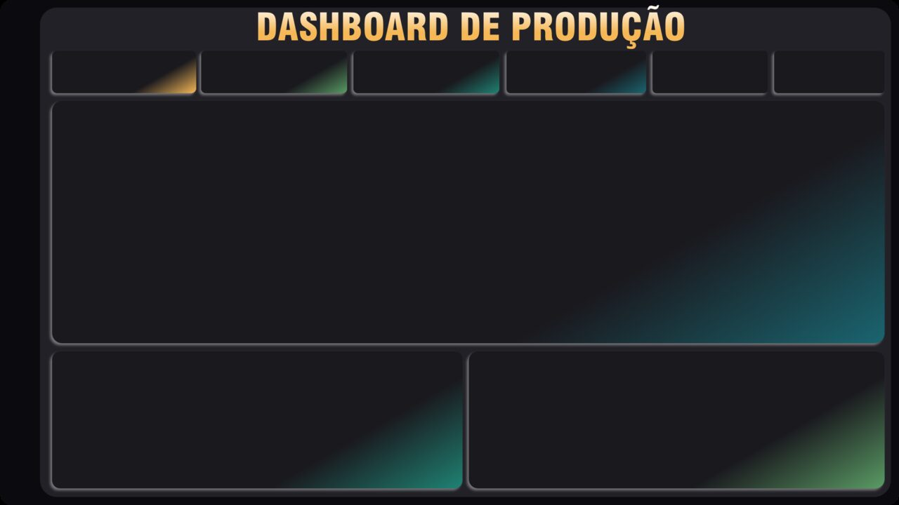
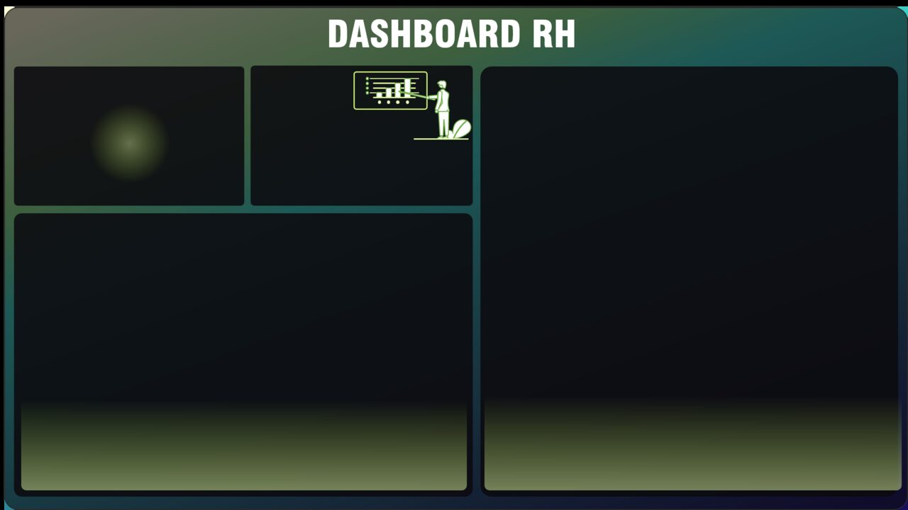

Medidas com DAX
Medidas com DAXMedida guarda a conta
Uma medida não guarda um número: guarda a fórmula. O número aparece no visual, calculado para o filtro que estiver na tela.
Dashboard de Produção e Dashboard de RH
Avançando nos relatórios: medidas escritas em DAX e aplicadas nos gráficos. São duas partes, cada uma com um dashboard: o de Produção, com a BaseProdução, e o de RH, com a BaseFuncionarios.
BaseProdução.xlsx · 31.616 registros de produção, de janeiro de 2021 a janeiro de 2022 · 31 operadores

Data Analysis eXpressions, ou expressões de análise de dados: a linguagem das fórmulas do Power BI. Lembra as fórmulas do Excel, mas trabalha com colunas inteiras e recalcula sozinha a cada filtro.
escolha um operador ou clique numa coluna do gráfico: a medida recalcula// Excel: uma célula, um intervalo fixo =SOMA(G2:G31617) // DAX: uma medida, a coluna inteira Qtd Produzida = SUM(BaseProdução[Qtd Produzida])
Excel DAX células: G2:G31617 colunas: Tabela[Coluna] funções em português funções em inglês SOMA, SE, CONT.SE SUM, IF, CALCULATE resultado fixo na célula recalcula a cada filtro
Uma medida não guarda um número: guarda a fórmula. O número aparece no visual, calculado para o filtro que estiver na tela.
Qtd Produzida vale no cartão, no gráfico por mês e na dica de ferramenta. Escreve uma vez, usa em todo o relatório.
Escrever como no Excel. =SOMA(...) dá erro: no DAX as funções são em inglês e a fórmula começa pelo nome da medida.
Nome, sinal de igual e expressão. A expressão mais simples é uma agregação: uma função que transforma a coluna inteira em um número só.
Teste SUM na coluna Operador: o DAX não soma texto. E DISTINCTCOUNT em Numero Ordem: quantas ordens de produção diferentes existem.
a medida na barra de fórmulas
Pode ter espaço e acento. É o nome que aparece no painel Dados e no visual, então escolha um que diga o que a medida mostra.
O nome da tabela vem antes da coluna, e a coluna vai entre colchetes. O Power BI completa enquanto você digita: aceite a sugestão com Tab.
DISTINCTCOUNT conta o branco como um valor. A coluna Ocorrência tem 12 tipos de ocorrência e linhas em branco: o resultado é 13.
Primeiro, uma tabela só para guardar as medidas. Depois, cada medida na barra de fórmulas, e o resultado num cartão.
Inserir dados, Nova medida, escreva e tecle Enter; depois marque a medida com o cartão selecionado1. Página Inicial › Inserir dados Nome: Medidas › Carregar 2. selecione a tabela Medidas no painel Dados 3. Página Inicial › Nova medida 4. escreva na barra de fórmulas e tecle Enter 5. selecione o cartão e marque a medida
Qtd Produzida = SUM(BaseProdução[Qtd Produzida]) Qtd Rejeitada = SUM(BaseProdução[Qtd Rejeitada]) // bônus: ordens de produção diferentes Ordens = DISTINCTCOUNT(BaseProdução[Numero Ordem])
A tabela nasce com uma coluna vazia (Coluna1). Depois da primeira medida, exclua essa coluna: o ícone vira o de calculadora e a tabela sobe para o topo do painel Dados.
A medida fica na tabela que estava selecionada ao clicar em Nova medida. Para mudar depois: Ferramentas de medida › Tabela inicial.
Criar a medida Qtd Produzida dentro da BaseProdução: a tabela já tem uma coluna com esse nome e o Power BI recusa. Por isso a tabela Medidas.
Horas produtivas são as horas sem nenhuma ocorrência (Ocorrência em branco); horas paradas, as horas com alguma ocorrência. As duas somam a mesma coluna, Total Horas, cada uma com um filtro.
crie as duas medidas, coloque nos cartões e clique numa barraHoras Produtivas =
CALCULATE(
SUM(BaseProdução[Total Horas]), // o que calcular
BaseProdução[Ocorrência] = BLANK() // com qual filtro
)
Horas Paradas =
CALCULATE(
SUM(BaseProdução[Total Horas]),
BaseProdução[Ocorrência] <> BLANK()
)
// = BLANK() está em branco
// <> BLANK() não está em branco
O primeiro argumento é o que calcular. Depois vêm um ou mais filtros, separados por vírgula.
Uma célula sem nada é BLANK no Power BI. No visual, ela aparece como (Em branco).
Com uma barra selecionada, Horas Produtivas não muda. Não é erro: o filtro do CALCULATE na coluna Ocorrência substitui o filtro do clique na mesma coluna.
Disponibilidade e Qualidade são proporções: uma medida dividida por outra. DIVIDE divide e, quando o denominador é zero ou vazio, devolve (Em branco) em vez de erro.
crie as medidas, mude o formato para % e escolha a operadora Manuela MeregeDisponibilidade =
DIVIDE(
[Horas Produtivas],
[Horas Produtivas] + [Horas Paradas]
)
Qualidade =
DIVIDE([Qtd Produzida] - [Qtd Rejeitada], [Qtd Produzida])
medida dentro de medida: só o nome [Horas Produtivas] formato de porcentagem selecione a medida no painel Dados Ferramentas de medida › Formatação › % medidor de 0% a 100% Formatar visual › Eixo do medidor Mínimo: 0 · Máximo: 1
[Horas Produtivas] reaproveita a conta pronta. Se a regra mudar, você muda num lugar só e todas as medidas que usam ela acompanham.
Com /, dividir por zero mostra NaN ou Infinito no visual. DIVIDE devolve (Em branco) e o visual fica limpo.
Ver 0,78 no medidor e achar que é pouco. É 77,69%: falta só o formato de porcentagem.
As duas usam DAX, mas calculam em momentos diferentes. A coluna calculada roda linha por linha e fica guardada na tabela; a medida calcula um número só, na hora, para o filtro que estiver na tela.
Exibição de tabela: Nova coluna; Exibição de relatório: Nova medida// coluna calculada: uma resposta por linha Peças Boas = BaseProdução[Qtd Produzida] - BaseProdução[Qtd Rejeitada] // medida: uma resposta por filtro Total Peças Boas = [Qtd Produzida] - [Qtd Rejeitada]
coluna calculada medida
cria em Nova coluna Nova medida
calcula linha por linha no filtro da tela
guarda o valor de cada só a fórmula
linha (ocupa)
serve para categoria, ano, total, média,
faixa porcentagem
Ano da contratação, faixa salarial, peças boas de cada ordem: coisas que você usa no eixo, na legenda ou na segmentação.
Totais, médias e porcentagens. É o que vai nos cartões, nos medidores e nos valores dos gráficos.
SUM numa coluna calculada: as 31.616 linhas recebem o total geral, 3.084.251. E o contrário, coluna sem agregação numa medida, dá erro.
O dashboard ganha cara com uma imagem de fundo feita fora do Power BI (no PowerPoint ou no Canva, por exemplo) e ícones em PNG. Os visuais ficam por cima, sem fundo próprio.
onde fica no Power BI
Clique numa área vazia: o painel muda para Formatar página. Cada visual também tem uma Tela de fundo, que precisa ficar desativada para a imagem aparecer atrás dele.
A página tem 1280 × 720, proporção 16:9. Monte a imagem nessa proporção e use Ajustar: ela ocupa a página inteira sem cortar.
A transparência da Tela de fundo começa em 100%. A imagem entra, mas não aparece até você baixar para 0%.
Tudo junto: plano de fundo, ícones, quatro cartões, duas segmentações, a produção mensal e os dois medidores. Escolha um operador ou um mês: todos os números se recalculam.
abra as segmentações no alto, à direita, ou clique num ponto do gráficoCartão de linha múltipla (um para cada) Qtd Produzida · Qtd Rejeitada Horas Produtivas · Horas Paradas Segmentação de dados, estilo Lista suspensa Operador · Data Inicio › Mês Gráfico de área Eixo X: Data Inicio › Mês Eixo Y: Qtd Produzida Medidor: Disponibilidade Medidor: Qualidade
Formatar visual, em todos Tela de fundo: Desativado Título: texto branco, centralizado Gráfico de área Rótulos de dados: Ativado, branco, Mil Eixo Y e linhas de grade: Desativado Medidores Eixo do medidor: Mínimo 0 · Máximo 1 Pincel de Formatação copie o primeiro cartão para os outros
Escolher Manuela Merege muda os cartões, o gráfico e os medidores ao mesmo tempo. As medidas recalculam para o filtro.
A base vai até 9 de janeiro de 2022, e o nível Mês junta os dois janeiros: dos 310 Mil, 22 Mil são de 2022. Para separar, use Ano e Mês no eixo.
Medidor sem máximo: o Power BI usa o dobro do valor como máximo, e 77% vira meio ponteiro. Para porcentagem, fixe o Máximo em 1 (100%).
BaseFuncionarios.xlsx · 234 contratações de 2010 a 2018 · 5 áreas · 5 cargos · 9 cidades

Na BaseFuncionarios, cada linha é uma pessoa contratada. Para saber quantas, conte as linhas da tabela. Para saber quantas foram demitidas, conte os valores da coluna de demissão.
Nova medida, escreva, Enter; use a Exibição de tabela para conferir a coluna Data de Demissao// linhas da tabela: 234 Contratações = COUNTROWS(BaseFuncionarios) // valores (não vazios) de uma coluna: 17 Datas de Demissão = COUNT(BaseFuncionarios[Data de Demissao]) // valores diferentes: 5 Cargos = DISTINCTCOUNT(BaseFuncionarios[Cargo])
função recebe conta COUNTROWS tabela linhas COUNT coluna células com valor COUNTBLANK coluna células em branco DISTINCTCOUNT coluna valores diferentes
Só o nome da tabela, sem colchetes: COUNTROWS(BaseFuncionarios). É a contagem mais segura, porque não depende de nenhuma coluna estar preenchida.
Só 17 pessoas têm Data de Demissao preenchida. COUNT pulou as 217 células em branco: quem ainda trabalha na empresa.
Contar funcionários com COUNT de uma coluna que tem buracos. O número sai menor, e ninguém percebe olhando o cartão.
Para ver as contratações ano a ano, a tabela precisa de uma coluna com o ano. Para desenhar a linha do tempo pequena embaixo do cartão, um visual que não vem no Power BI: o Sparkline, do AppSource.
siga as tarefas: cartão de linha múltipla, coluna do ano, importar o Sparkline// coluna calculada em BaseFuncionarios
Ano da Contratação =
YEAR(BaseFuncionarios[Data de Contratacao])
// YEAR, MONTH e DAY tiram um pedaço da data
// 23/04/2015 → 2015
Visualizações › ··· › Obter mais visuais pesquise: Sparkline Sparkline by OKViz › Adicionar sem internet: ··· › Importar um visual de um arquivo (.pbiviz) Sparkline Axis: Ano da Contratação Measure: Contratações
Com o cartão selecionado, clique no ícone do Cartão de linha múltipla: os campos passam para o visual novo, que aceita várias medidas e se ajusta melhor ao fundo.
É feito por outras empresas e fica guardado dentro do .pbix. Prefira os certificados, que a Microsoft revisou.
Ano da Contratação aparece com Σ: o Power BI acha que é número para somar. Em Ferramentas de coluna › Resumo, escolha Não resumir.
CALCULATE de novo, agora contando linhas: ativo é quem não tem Data de Demissao; desligado, quem tem. A rotatividade (turnover) divide os desligados pelas contratações.
Shift + Enter quebra a linha; Enter confirma a medidaFunc. Ativos =
CALCULATE(
COUNTROWS(BaseFuncionarios),
BaseFuncionarios[Data de Demissao] = BLANK()
)
Func. Desligados =
CALCULATE(
COUNTROWS(BaseFuncionarios),
BaseFuncionarios[Data de Demissao] <> BLANK()
)
% Rotatividade = [Func. Desligados] / [Contratações] // 17 / 234 = 0,0726 → formato % → 7,26%
Shift + Enter nova linha na barra de fórmulas · Enter confirma · Esc cancela
As quebras de linha e o recuo não mudam o cálculo: o Power BI ignora. Servem para quem lê a medida depois, inclusive você.
Ctrl + C e Ctrl + V no cartão de Contratações: a cópia já vem formatada. Só troque a medida.
A rotatividade usa / e funciona porque Contratações nunca é zero aqui. Num filtro sem ninguém contratado, DIVIDE seria o mais seguro.
O funil precisa da cidade, mas a planilha só tem o endereço completo. No Power Query, a Coluna de Exemplos descobre a regra a partir de um exemplo digitado.
A primeira linha é Av. Borges de Medeiros, 3120 - Praia de Belas, Porto Alegre - RS, 90110-150. Teste também RS e 90110-150.
no Power Query
Página Inicial › Transformar dados abre o Power Query. Lá: Adicionar Coluna › Coluna de Exemplos › A partir de Todas as Colunas. No fim, Fechar e Aplicar.
Antes do OK, leia a fórmula que o Power Query escreveu e role a coluna: a regra precisa servir para todas as linhas, inclusive o endereço de shopping.
Um exemplo pode servir para duas regras. Se a coluna vier errada nas outras linhas, digite um segundo exemplo na linha de baixo.
Três visuais com a mesma medida, Func. Ativos. Clique numa cidade do funil ou numa fatia da rosca: os outros visuais filtram junto. Na árvore, clique nos nós para abrir a Área e depois o Cargo.
clique numa cidade, numa fatia ou num nó da árvore; clique de novo para limparFunil Categoria: Cidade Valores: Func. Ativos Gráfico de rosca Legenda: Genero Valores: Func. Ativos
Árvore hierárquica Analisar: Func. Ativos Explicar por: Área, Cargo no nó, clique em + e escolha o próximo nível (Área, depois Cargo)
Um clique filtra os outros visuais da página; Ctrl + clique seleciona mais de um. Clique de novo no mesmo ponto para limpar.
Dos 217 ativos, quantos em cada área? E, dentro de Operações, em cada cargo? Cada clique abre um nível, ordenado do maior para o menor.
Rosca com muitas fatias vira confusão. Ela funciona com 2 a 5 categorias, como gênero; para as 9 cidades, o funil ou as barras leem melhor.
A dica de ferramenta pode ser um mini dashboard que aparece ao passar o mouse. Passe o mouse nas cidades do funil: a página de dica mostra os ativos, a folha salarial e as horas extras por cargo daquela cidade.
passe o mouse nas barras do funil; clique na rosca ou na árvore para filtrar1. nova página (+ no rodapé) · nome: Dica
2. Formatar página › Informações da página
Permitir uso como dica de ferramenta: Ativado
3. Formatar página › Configurações de tela
Tipo: Dica de ferramenta (320 × 240)
4. Tela de fundo: Fundo da Dica de Ferramenta.png
5. Cartão: Func. Ativos
Cartão: Salario › renomear: Folha Salarial
Gráfico de barras: Cargo × Horas Extras
6. volte ao dashboard e selecione o funil
7. Formatar visual › Geral › Dicas de ferramenta
Tipo: Página do relatório
Página: Dica
8. passe o mouse numa cidade do funil
inspiração para o layout
dribbble.com pesquise: dashboard
br.pinterest.com pesquise: power bi dashboard
Ao passar o mouse em Recife, a página de dica é calculada só para Recife. As medidas são as mesmas; o filtro vem do ponto do gráfico.
Clique duas vezes no campo dentro do visual (ou botão direito › Renomear para este visual): Soma de Salario vira Folha Salarial só ali.
Esquecer o Tipo Dica de ferramenta: a página fica com 1280 × 720 e a dica aparece minúscula, ilegível.
Responda em voz alta; um clique mostra a resposta certa e o porquê.
Qual medida soma a coluna Qtd Produzida?
No DAX a medida começa pelo nome, as funções são em inglês e a coluna vem com a tabela: Tabela[Coluna].
A BaseFuncionarios tem 234 linhas e 17 datas de demissão. Quanto dá COUNT(BaseFuncionarios[Data de Demissao])?
COUNT conta as células com valor. As 217 células em branco ficam de fora. Para contar as linhas, COUNTROWS.
Você clica na barra "Controle de Qualidade". O que acontece com o cartão Horas Produtivas?
O CALCULATE filtra a coluna Ocorrência com = BLANK(), e esse filtro substitui o do clique, que é na mesma coluna.
Manuela Merege não produziu nenhuma peça. O que a medida Qualidade, feita com DIVIDE, mostra para ela?
O denominador, Qtd Produzida, é zero. DIVIDE devolve (Em branco); com a barra /, seria NaN.
Qual destas é uma coluna calculada, e não uma medida?
YEAR de uma coluna precisa de uma linha para saber de qual data tirar o ano: é um valor por pessoa, usado como categoria no eixo.
Como quebrar a linha na barra de fórmulas sem confirmar a medida?
Enter confirma a medida. Shift + Enter só pula de linha, para deixar a fórmula legível.
A imagem de fundo foi escolhida na Tela de fundo, mas a página continua branca. O que falta?
A Tela de fundo começa com 100% de transparência: a imagem está lá, invisível.
% Rotatividade dá 0,0726. Como mostrar 7,26% no cartão?
O formato muda só a aparência. Multiplicando por 100, o cartão mostraria 7,26, mas sem o % e com o valor errado para outras contas.
As funções DAX da aula e onde ficam os comandos que usamos.
| Função | Para | Exemplo desta aula |
|---|---|---|
SUM | somar uma coluna | SUM(BaseProdução[Qtd Produzida]) |
DISTINCTCOUNT | contar valores diferentes | DISTINCTCOUNT(BaseProdução[Numero Ordem]) |
COUNTROWS | contar as linhas de uma tabela | COUNTROWS(BaseFuncionarios) |
COUNT | contar as células com valor | COUNT(BaseFuncionarios[Data de Demissao]) |
CALCULATE | calcular com outro filtro | CALCULATE(SUM(BaseProdução[Total Horas]), BaseProdução[Ocorrência] = BLANK()) |
BLANK | o valor vazio, para comparar | BaseFuncionarios[Data de Demissao] <> BLANK() |
DIVIDE | dividir sem erro de divisão por zero | DIVIDE([Qtd Produzida] - [Qtd Rejeitada], [Qtd Produzida]) |
YEAR | tirar o ano de uma data | YEAR(BaseFuncionarios[Data de Contratacao]) |
| Para | Use | Onde |
|---|---|---|
| Criar uma tabela só de medidas | Inserir dados | Página Inicial |
| Criar uma medida | Nova medida | Página Inicial (ou botão direito na tabela, no painel Dados) |
| Criar uma coluna calculada | Nova coluna | Ferramentas de tabela, na Exibição de tabela |
| Mostrar como porcentagem | Formatação › % | Ferramentas de medida |
| Quebrar linha na fórmula | Shift + Enter | barra de fórmulas |
| Imagem atrás dos visuais | Tela de fundo › Imagem · Transparência 0% | Visualizações › Formatar página |
| Inserir um ícone | Elementos › Imagem | Inserir |
| Medidor de 0 a 100% | Eixo do medidor › Mínimo 0 · Máximo 1 | Formatar visual |
| Visual que não vem no Power BI | ··· › Obter mais visuais | Visualizações |
| Coluna a partir de um exemplo | Coluna de Exemplos | Power Query · Adicionar Coluna |
| Página que vira dica | Permitir uso como dica de ferramenta · Tipo: Dica de ferramenta | Formatar página |
| Ligar a dica a um visual | Dicas de ferramenta › Tipo: Página do relatório | Formatar visual › Geral |
Nos dois relatórios da aula, deixe os dashboards completos, com as medidas escritas por você em DAX, e acrescente medidas novas.
BaseProdução.xlsx: 31.616 registros de produção, de janeiro de 2021 a janeiro de 2022.BaseFuncionarios.xlsx: 234 contratações, de 2010 a 2018.= BLANK() por = ""? Teste.Os dois arquivos .pbix salvos como aula2-producao-seu-nome.pbix e aula2-rh-seu-nome.pbix, com as respostas da investigação numa caixa de texto (Inserir › Caixa de texto).
Os números conferem: Qtd Produzida 3,08 Mi, Disponibilidade 77,69%, Qualidade 99,32%, Func. Ativos 217, % Rotatividade 7,26%. Tudo calculado por medidas, nada digitado.
Cada visual se explica sozinho: título que diz o que mostra, porcentagem com %, rótulos legíveis sobre o fundo escuro.